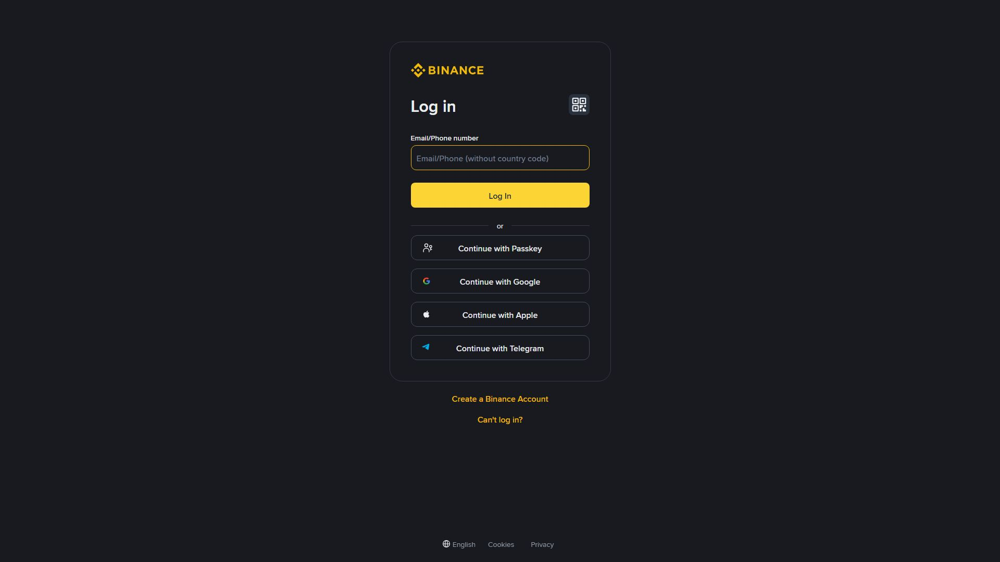

Sub-account بائننس کی وہ سہولت ہے جس سے ایک مرکزی اکاؤنٹ (Master) کے نیچے کئی الگ الگ ٹریڈنگ اکاؤنٹس بنائے جا سکتے ہیں۔ یہ صرف بڑے traders/funds کے لیے نہیں — ایک ہی شخص اپنی مختلف حکمت عملیاں (Spot، Futures، Bots) الگ رکھنا چاہے تو بھی مفید ہے۔

تصویر 55.1: Sub-account بنانے کا صفحہ — Master اکاؤنٹ سے نیا ذیلی اکاؤنٹ تخلیق، ای میل، لیبل اور اجازتوں کا تعین۔
🎯 اس باب میں آپ سیکھیں گے
Sub-account کیا ہے اور کس کے لیے ہے
Master بمقابلہ Sub اکاؤنٹ کا تعلق
اجازتیں (Permissions) کیسے محدود رکھیں
فنڈز کی منتقلی (Master ↔ Sub)
Virtual Sub-accounts اور API کا تعلق
اصل رسک اور غلطیاں
📖 55.1 Sub-account کیا ہے؟
Master Account (آپ کا مرکزی اکاؤنٹ)
├── Sub-Account A → Spot only
├── Sub-Account B → Futures + Bots
├── Sub-Account C → صرف DCA/Recurring
└── Sub-Account D → الگ حکمت عملی
ہر Sub-account الگ بیلنس، الگ آرڈرز اور الگ رپورٹ رکھتا ہے۔
سب Master کے ماتحت ہیں — Master ان کی نگرانی/منتقلی کر سکتا ہے۔
Sub-accounts اکثر کم از کم 18 سال کے اکاؤنٹ مالک کے لیے دستیاب ہوتے ہیں۔
📖 55.2 فوائد
فائدہ
تفصیل
الگ حکمت عملیاں
Spot، Futures، Grid/Bots الگ الگ
رسک محدود کرنا
ایک حکمت عملی نقصان میں، دوسری محفوظ
الگ رپورٹ
ہر حکمت عملی کا Net Profit الگ
ٹیم/کسٹمر
کسی کے لیے الگ اکاؤنٹ (تحفّظ کے ساتھ)
Virtual Sub-account
API/بڑے حجم کے لیے زیادہ Sub اکاؤنٹ (بغیر الگ ای میل)
اصول: جس Sub-account کو جس سہولت کی ضرورت نہ ہو، اس کی اجازت آف رکھیں۔ اگر Sub-account ہیک ہو جائے تو محدود اجازت سے نقصان محدود رہے گا۔ Withdraw اجازت عموماً آف رکھیں جب تک نہ ہو کوئی ٹھوس وجہ۔
📖 55.4 فنڈز کی منتقلی
Master → Sub-Account: Transfer → فنڈز منتقل (فوری، اندرونی)
Sub → Master: واپس منتقل
نوٹ: Sub-accounts عموماً براہِ راست ڈیپازٹ/وائیدراول نہیں کر سکتے
→ Master سے فنڈز دے کر ٹریڈ کروائیں
اندرونی منتقلی عام طور پر فوری اور بغیر نیٹ ورک فیس ہوتی ہے۔
ہر Sub کی Available اور In Order الگ دیکھیں۔
📖 55.5 Virtual Sub-accounts اور API
Virtual Sub-account — بڑی تعداد میں اکاؤنٹس، بغیر الگ ای میل، خودکار تخلیق کے لیے۔
API سے جوڑ کر آٹو-ٹریڈنگ، مارکیٹ میکر بھی ممکن۔
ہر Sub کا اپنا API Key — ایک بند ہو تو دوسرے متاثر نہیں۔
⚠️ عام غلطیاں
❌ Withdraw اجازت تمام Sub-accounts کو دینا — رسک بڑھتا ہے۔